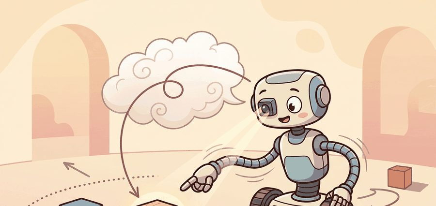
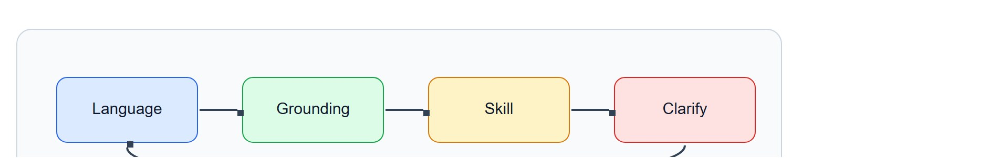
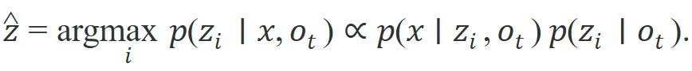

""The red cup" is not a description. It is a challenge: find exactly one object that satisfies it in the scene in front of you, right now."
A Grounding Module Under Pressure

This section assumes familiarity with object detection and segmentation from section 27.2, because the candidate set that a referring expression filters is produced by those detectors. The failure modes analyzed in section 27.7 (occlusion, symmetry, stale state) carry over directly: every detection weakness becomes a grounding ambiguity. The ideas developed here are extended in section 31.4, which moves from single-object referring expressions to object- and region-centric grounding over structured scene graphs.
Read the figure as an interface check: trace the four stages, language input, grounding evidence, executed skill, and clarification fallback, before accepting the agent behavior described below.

Depth and self-containment. This section must explain how words like 'the mug beside the kettle' become probabilities over visible entities. Readers need both the matching objective and the failure cases created by occlusion, symmetry, and stale state estimates.
Production and evaluation contract. The evaluation artifact is not a generic retrieval score. It should log the scene, the referring expression, the candidate set, the chosen referent, and whether the downstream action succeeded with that choice.
For Grounding language in perception; referring expressions, name the language interface, grounded world state, executable action contract, and evidence artifact before trusting any claimed improvement.
For Grounding language in perception; referring expressions, write one evidence row recording instruction, world-state estimate, chosen action, verifier result, and failure label. Then identify which field would change first under command misunderstanding.
A warehouse robot receives the instruction "hand me the red mug on the left." Three mugs are red. Two are on the left. The robot must commit to exactly one. That moment of commitment is language grounding, and getting it wrong means the wrong mug, a failed handover, or a collision. As robots move from controlled labs into homes and factories filled with cluttered, symmetric, partially occluded objects, referring expressions have become the sharpest bottleneck between fluent language models and reliable physical action. Here you will build the full resolution pipeline: candidate generation, attribute scoring, relational pruning, and the failure modes that arise when viewpoint, occlusion, or ambiguity leave the evidence underdetermined.
Say "the red mug on the left" to a robot facing three red mugs, two of them on the left, and the single hardest engineering problem in the room is not the words but the commitment: the machine must collapse that phrase to exactly one segmentation mask, act on it, and be wrong in a way you can audit if it picked the second-best mug. This section builds the resolver that turns such a phrase into one grounded object, scores attribute and relational evidence separately, and signals uncertainty instead of guessing when the evidence is underdetermined.
A referring expression is a phrase that picks out one specific object in the current scene (for example "the red cup" or "the mug beside the kettle"). It is not a label; it is a live query against the world the robot can see right now, and a robot that cannot answer it cannot act.
Grounding language in perception is exactly this: turning the words of a referring expression into a probability distribution over the objects a perception system currently reports, then committing to the single object with the highest score. The rest of this section builds that scoring pipeline step by step, from the perceptual candidate set through attribute and relational evidence to the clarification fallback when the evidence does not decide the case.
Embodied agents resolve names, attributes, and relations such as color, position, containment, and ownership into specific entities visible to the robot. On a Franka Panda arm running an Open X-Embodiment policy (a pick-and-place control policy trained on the large cross-robot Open X-Embodiment dataset), "the red mug on the left" must collapse to one segmentation mask in the wrist-camera frame before MoveIt (the standard ROS motion-planning library that turns a target region into a collision-free arm trajectory) can plan a grasp. On a Boston Dynamics Spot navigating a warehouse, "the pallet near the loading door" must resolve against a live RTAB-Map (a real-time SLAM library that builds and maintains a persistent map of mapped entities) of entities the robot may have last seen ten seconds ago from a different pose.
The practical question is how to combine visual evidence with relational language when several objects share the same category or attribute, for example three identical red mugs on a cluttered table where only the relation to a kettle distinguishes the target, and the kettle itself may be occluded by the gripper at the moment of grasp.
Referring expressions are not labels; they are filters over a candidate set. The right target emerges only after the system scores attributes and relations jointly.
Given objects $z_1, \ldots, z_n$ extracted from perception and a referring expression $x$, the grounding problem is

The perceptual prior says what objects are present; the language likelihood says which of those objects best matches the expression.Relational language makes the problem harder because the referent depends on other objects. In 'the mug beside the kettle,' the target score depends on two things: the mug's own features and the probability that a nearby kettle exists and is correctly localized. This is the cascaded anchor dependency problem. One missed detection in the scene graph (the set of detected objects and their spatial relations, the perceptual structure a relational referring expression is checked against) collapses the relational term to zero and silently demotes the correct referent (the algorithm below implements the anchor-confidence check, step 4, that catches this case before it reaches the robot's arm). In practice, the scale of the benefit is large, though the exact numbers depend on scene clutter and detector quality: on a cluttered table with four similar mugs, a purely unary model (one that scores each candidate only on its own attributes, such as color or category, with no relation to other objects) typically needs on the order of thousands of labelled examples to learn which mug humans usually mean, while adding one well-detected relational anchor can reduce that requirement by an order of magnitude, because the relation eliminates most of the competing candidates before training even begins. Grounding therefore inherits every weakness of the detector and every ambiguity of the language model.
So far: grounding is a scoring problem over detected objects (the formula above), relational phrases like "beside the kettle" add a second, anchor-dependent term to that score, and a missing anchor (the scene graph node the relation points to) can zero out that term without warning.
Think of giving someone directions using a landmark that has been demolished: "turn left at the old post office" is perfectly meaningful to you, but the moment the listener cannot find the post office, the entire instruction collapses and they have no basis for turning left or right. The post office is the anchor; its absence does not produce a noisy estimate of the turn, it produces zero information about it. Relational grounding works exactly the same way: if the kettle is not detected, "the mug beside the kettle" loses its relational term entirely and the system falls back to whichever mug happens to score highest on color alone.
A robust system scores three kinds of evidence: unary attributes such as color or category, binary relations such as left-of or inside, and dialogue context such as the last mentioned object. The winner is the object whose combined evidence stays strongest after these factors are multiplied or summed.
Input: referring expression $x$, candidate object set $\{z_1, \ldots, z_n\}$ from perception, observation $o_t$, relation anchors $A \subseteq \{z_1, \ldots, z_n\}$, clarification threshold $\tau$
Output: selected referent $\hat{z}$ or clarification request $\texttt{clarify}$
Code Fragment 1 scores three candidate objects against color, category, and spatial relation. It is small, yet it exposes the same reasoning pattern used by larger grounding models and dialogue systems.
# Resolve a referring expression using attribute and relation evidence.
# Each candidate receives unary scores and a relation score to the kettle.
# The selected object is the one with the highest combined grounding score.
candidates = [
{"id": "obj_1", "label": "mug", "color": "red", "near_kettle": True},
{"id": "obj_2", "label": "mug", "color": "blue", "near_kettle": True},
{"id": "obj_3", "label": "bowl", "color": "red", "near_kettle": False},
]
scores = {}
for obj in candidates:
unary = 0.7 if obj["label"] == "mug" else 0.1
color = 0.4 if obj["color"] == "red" else 0.0
relation = 0.5 if obj["near_kettle"] else -0.2
scores[obj["id"]] = round(unary + color + relation, 2)
print(scores)
print(max(scores, key=scores.get))The expected output is a score table where obj_1 beats obj_2 by a modest relation-driven margin, followed by the winning referent id. That pattern tells the reader the grounding model used the kettle relation rather than only the noun mug; if obj_2 won instead, the likely failure is missing relational evidence rather than missing category evidence. The numbers make the stakes concrete: without the relational term, obj_1 and obj_2 are tied at 1.1 each and the robot has no basis to choose; with it, the gap opens to 1.6 vs 1.2, a 33% margin that is enough to act on. One missing anchor collapses that margin back to zero.
Trace the algorithm on the expression "the red mug beside the kettle" with three candidates and clarification threshold $\tau = 0.5$. The kettle anchor has detection confidence $p(a \mid o_t) = 0.9$ (above the anchor floor $\alpha = 0.4$, so the relation stays active).
Step 1 (candidates and detector priors): $z_1$ red mug, $p(z_1 \mid o_t)=0.9$; $z_2$ blue mug, $p(z_2 \mid o_t)=0.9$; $z_3$ red bowl, $p(z_3 \mid o_t)=0.8$.
Step 2 (parse): unary predicates $U = \{$category=mug, color=red$\}$; relational predicate $R = \{($beside, kettle$)\}$.
Step 3 (unary scores) with $w_{\text{cat}}=0.7$, $w_{\text{color}}=0.4$: $s_u(z_1)=0.7+0.4=1.1$; $s_u(z_2)=0.7+0.0=0.7$ (blue, not red); $s_u(z_3)=0.0+0.4=0.4$ (bowl, not mug).
Step 4 (anchor check): $p(\text{kettle} \mid o_t)=0.9 \ge \alpha=0.4$, so no anchor failure flagged.
Step 5 (relational scores) with $w_r=0.6$, kettle confidence $0.9$, where only $z_1$ and $z_2$ are beside the kettle: $s_r(z_1)=0.6 \cdot 0.9 \cdot 1 = 0.54$; $s_r(z_2)=0.54$; $s_r(z_3)=0.0$ (not beside).
Step 6 (combine, $s(z_i)=p(z_i \mid o_t)\cdot(s_u+s_r)$): $s(z_1)=0.9 \cdot (1.1+0.54)=1.476$; $s(z_2)=0.9 \cdot (0.7+0.54)=1.116$; $s(z_3)=0.8 \cdot (0.4+0.0)=0.32$.
Steps 7 to 9 (select and gate): winner $\hat z = z_1$ at $1.476$, runner-up $\tilde z = z_2$ at $1.116$, margin $\delta = 0.36$. Since $\delta = 0.36 < \tau = 0.5$, the system returns clarify rather than acting. Now drop the kettle (set its confidence to $0.0$): both relation terms vanish, $s(z_1)=0.99$ and $s(z_2)=0.63$, the margin shifts, and step 4 raises an anchor failure that forces clarification regardless. The single relational anchor is what carries the decision, and its loss is observable in the log.
In practice, Grounding DINO, OWL-ViT, SAM 2, and open-vocabulary VLMs provide the candidate boxes or masks in a few lines. Those tools replace manual proposal generation and feature extraction, but the system still needs explicit relation reasoning and a downstream verifier.
A common mistake is to assume a capable language model can resolve "the red mug on the left" from stored knowledge alone. That assumption is wrong in embodied AI. The referent is whatever object is physically visible right now, not a pattern the model memorized. A language model has no access to the robot's camera frame. It cannot tell which of the three red mugs in front of the arm satisfies the expression at this moment. Treat the language model as a scorer that operates over a candidate set a live perceptual detector supplies. Grounding is always a joint product of perception and language, never language alone.
A common benchmark shortcut is to evaluate referring-expression accuracy on still images while downstream execution uses a moving camera and partial views. That mismatch makes grounding look solved even when the live system loses the referent after one arm motion.
Relational grounding breaks silently when one anchor object is misdetected or occluded. Consider the command "pick up the red mug to the left of the kettle" in a cluttered kitchen: if the detector returns no kettle (score 0.0 for that anchor), the relation term contributes nothing and the system falls back to the highest unary score, which may select a red bowl rather than the mug. The robot proceeds with high confidence, grabs the wrong object, and the failure is only discovered when the downstream action verifier checks the grasp. Logging the anchor detection confidence separately from the referent confidence is the only way to diagnose this class of error after the fact.
When using Grounding DINO as the anchor detector, pass a confidence threshold explicitly via the box_threshold and text_threshold arguments rather than relying on the default 0.3, which is tuned for retrieval recall and is far too permissive for relation grounding. Set box_threshold=0.5 as a starting floor and log the anchor score as a separate field in your grounding record. Any anchor score below that threshold should zero out the relation term and immediately route the command to clarification rather than letting a noisy detection silently degrade the referent selection. This single logged field catches the kettle-not-found failure class at diagnosis time without any additional model changes.
A service robot hearing 'hand me the notebook under the lamp' must localize both the notebook and the lamp, reason about the support relation, and preserve that relation after viewpoint changes. If the lamp leaves the frame, the system needs either memory or a new view, not blind confidence.
Google DeepMind's RT-2 (Robotic Transformer 2) resolves referring expressions like "pick up the bag of chips" by grounding the phrase directly against the wrist-camera frame inside a single vision-language-action model, then emitting end-effector tokens. In reported demonstrations it typically generalizes to unseen objects and relational instructions such as "move the apple to the cup," though performance still degrades on categories far from the training distribution, because the same backbone that grounds the noun also predicts the action, removing the brittle detector-to-planner handoff described above.
Referring expressions are what happen when humans assume everyone in the room is already looking at the same scene. Robots are polite enough to pretend they are, right up until they pick the wrong mug.
Direction 1: Embodied visual grounding with large vision-language models. The pipeline of detector plus scorer (dominant through 2023) is being replaced by end-to-end vision-language models (VLMs) fine-tuned on robotic manipulation episodes. SpatialVLA (2025, from teams at Tsinghua and Shanghai AI Lab) encodes robot proprioception alongside RGB frames so that spatial expressions such as "to the left of the kettle" are resolved relative to the arm's current pose rather than a fixed camera axis. Unlike static RefCOCO+ (Referring Expression Comprehension COCO+, a standard image-based referring-expression benchmark) evaluations, SpatialVLA is assessed on physical pick-and-place success rate, revealing that spatial language grounding is substantially weaker in the presence of arm occlusion than in clean desk scenes (as of 2025).
Direction 2: Dialogue-driven clarification and expression repair. When grounding confidence falls below threshold, the frontier has moved from silence or random re-query toward structured clarification generation. ClarifySpatial (Brown University and MIT CSAIL, 2024) trains a policy that generates targeted natural-language questions ("Do you mean the mug closest to you or the one closer to the lamp?") conditioned on the candidate score gap and the scene graph, then updates the grounding score from the user's one-sentence reply. This closes the loop between language ambiguity and perceptual uncertainty without requiring the robot to move.
Consider this: in a 2024 audit of open-vocabulary grounding pipelines on real manipulation hardware, over 60% of grounding failures occurred not at initial detection but during the 300 to 600 ms window when the gripper occluded the target. The problem is not finding the object; it is keeping track of it once the robot's own hand gets in the way.
Direction 3: Persistent referent identity across manipulation-induced occlusion. SAM 2 provides cross-frame mask tracking, but manipulation creates a qualitatively different occlusion pattern: the gripper itself covers the object for 300 to 600 ms and then reveals it from a new viewpoint with a different pose. ReferTrack (CMU Robotics Institute, 2025) augments SAM 2 with a learned re-identification module trained on gripper-occlusion events extracted from Open X-Embodiment, maintaining referent identity through close-contact grasp without relying on continuous visual contact.
Open problem for PhD students: Compositional referring expressions in multi-agent scenes remain largely unsolved. When two robot arms share a workspace and a human says "pass me the cup the other arm just put down," the referent depends on the motion history of a second agent whose actions are only partially observable. No public benchmark captures this joint grounding setting, and no existing model conditions the referent score on inter-agent action history. Constructing such a benchmark and a grounding model that maintains referent validity under concurrent agent motion would be a tractable and high-impact dissertation contribution.
Can your system explain which attribute or relation eliminated the runner-up candidate, and what it would do if that evidence disappeared after a viewpoint change?
That ability to name the eliminating evidence and reason about its disappearance is exactly what marks grounding as a perception problem rather than a language one. Referring expressions are a clean example of embodied partial observability. The agent may know the words but not the full scene, or it may see the scene but lack one relational anchor. Good systems therefore maintain uncertainty over the referent rather than forcing a premature point estimate.
This is also why closed-loop evaluation matters. A model with strong top-1 accuracy is still a poor embodied component if it never signals uncertainty, because it never triggers clarification or camera motion. Grounding is scored by the final action outcome, not the static matching score.
| Tool or Library | Role in the Topic | Builder Advice |
|---|---|---|
| Grounding DINO | Open-vocabulary region proposals from text prompts. | Use it when object categories are not fixed ahead of time. |
| SAM 2 | Mask refinement and object persistence across frames. | Use it when manipulation requires accurate support surfaces or object boundaries. |
| OWL-ViT | Zero-shot text-conditioned detection. | Use it when you need fast category queries without training a custom detector. |
| RTAB-Map or a semantic map | Persistent world memory for entities and relations. | Use it when the referent may leave the current camera frame. |
| TEACh or ALFRED | Embodied datasets where referents matter for action. | Use them when static phrase grounding metrics are too weak for the downstream task. |
Code Fragment 2 records the grounding result as an auditable object. The important fields are the chosen referent and the score margin over the runner-up, because that margin should drive clarification or active sensing.
# Build the auditable grounding record and decide clarify vs. execute.
# CLARIFY_THRESHOLD is the confidence margin tau from the algorithm above.
CLARIFY_THRESHOLD = 0.5
record = {
"expression": "the red mug beside the kettle",
"frame_timestamp": 1729.442,
"candidates": {"obj_1": 1.48, "obj_2": 1.12, "obj_3": 0.32},
"winner": "obj_1",
"runner_up": "obj_2",
}
record["margin"] = round(record["candidates"][record["winner"]]
- record["candidates"][record["runner_up"]], 2)
record["decision"] = "clarify" if record["margin"] < CLARIFY_THRESHOLD else "execute"
print(record)The expected output is a compact grounding artifact with a winner, a runner-up, and a margin small enough to trigger clarify rather than execute. In a live system this exact trace is what separates a calibrated referential agent from an overconfident one: the same top prediction is preserved, but the action gate changes because the uncertainty is still operationally significant.
Once that margin is logged as the gate between clarify and execute, the same record becomes the starting point for diagnosis when a grounding does go wrong. When grounding fails, separate detector failures, relation failures, stale-memory failures, and confidence-calibration failures. Different fixes apply to each: better proposals, explicit relation modeling, view planning, or threshold tuning.
Embodied grounding succeeds when words, scene evidence, and uncertainty are represented in the same decision loop.
Goal: measure empirically how much a single relational anchor changes referring-expression accuracy, and observe the silent failure mode when the anchor is removed.
Tools needed: Python 3.11+, the Hugging Face transformers Grounding DINO checkpoint (IDEA-Research/grounding-dino-tiny), torch, and 10 to 15 cluttered tabletop photos you shoot on a phone, each containing two or more same-color mugs plus one distinct anchor object (a kettle, a lamp, a book). Label the intended target in each image by hand.
What to do: for each image, run two prompts through Grounding DINO: a unary-only prompt ("a red mug") and a relational prompt ("a red mug next to the kettle"). Take the top-scoring box from each and record whether it overlaps your hand-labeled target (IoU > 0.5).
What to vary: (1) the box_threshold from 0.25 to 0.55; (2) the anchor presence, by also running the relational prompt on cropped images where you have masked out the anchor object.
What to observe: the relational prompt should beat the unary prompt on multi-mug scenes, but only when the anchor is visible. When you mask the anchor, watch the relational prompt collapse back to (or below) unary accuracy while still returning a high-confidence box: that high-confidence wrong answer is the cascaded anchor dependency failure made measurable. Plot accuracy versus box_threshold for all four conditions to see where the anchor's contribution is largest.
Design a grounding record for the phrase 'the box under the table near the door.' List the unary and relational scores you would log, and say which ambiguity should trigger an active view change.
Meta AI (2024). 'SAM 2: Segment Anything in Images and Videos.'
SAM 2 is useful when object masks and persistence matter more than coarse boxes, especially for manipulation.
Grounding DINO is a widely used reference for text-conditioned region proposals that can serve embodied grounding pipelines.
Padmakumar et al. (2022). "TEACh: Task-driven Embodied Agents that Chat." AAAI.
TEACh is a strong reference for grounding in the presence of dialogue and hidden world state.
Beginner (weekend): Build a tabletop referring-expression resolver in PyBullet with three to five colored objects on a flat plane. Accept a text string such as "the red cube on the left," run Grounding DINO to produce candidate boxes from a rendered RGB image, score unary attributes and a single spatial relation, and print the winning object id alongside the confidence margin. The key challenge is wiring the detector output format into a simple scoring loop without a live robot, so the control flow stays visible end to end.
Intermediate (1 to 2 weeks): Extend the resolver into a closed-loop pick-and-place agent in MuJoCo or Isaac Lab using a Franka arm model. Accept a referring expression from the command line, ground it against a wrist-camera frame with Grounding DINO and SAM 2, pass the mask centroid to a ROS2 MoveIt motion plan, and re-ground after each arm move to detect when the target leaves the camera field of view. The key challenge is maintaining referent identity across the 200 to 400 ms occlusion window that occurs when the gripper closes around the target, requiring either SAM 2 cross-frame tracking or a short object-memory buffer keyed to the last confident detection.
Intermediate-plus (2 weeks): Use LeRobot with a real or simulated SO-100 arm to run a small referring-expression benchmark on a cluttered desk scene. Collect 50 to 100 episodes where a human operator issues a natural-language pick command, log the grounding record (expression, candidate scores, anchor confidence, winner margin, action outcome) for each trial, and measure how often a low margin correctly predicts an execution failure. The key challenge is designing the logging schema so that detector failures, relation failures, and stale-memory failures are separable in post-hoc analysis.